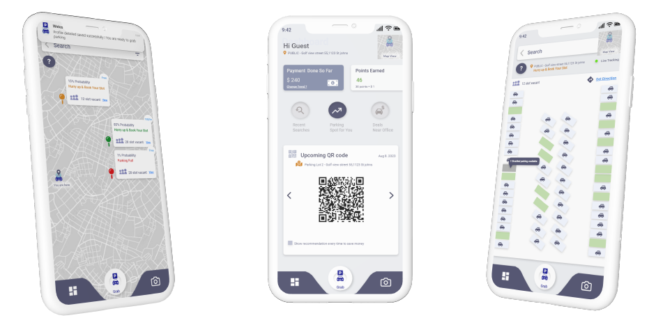
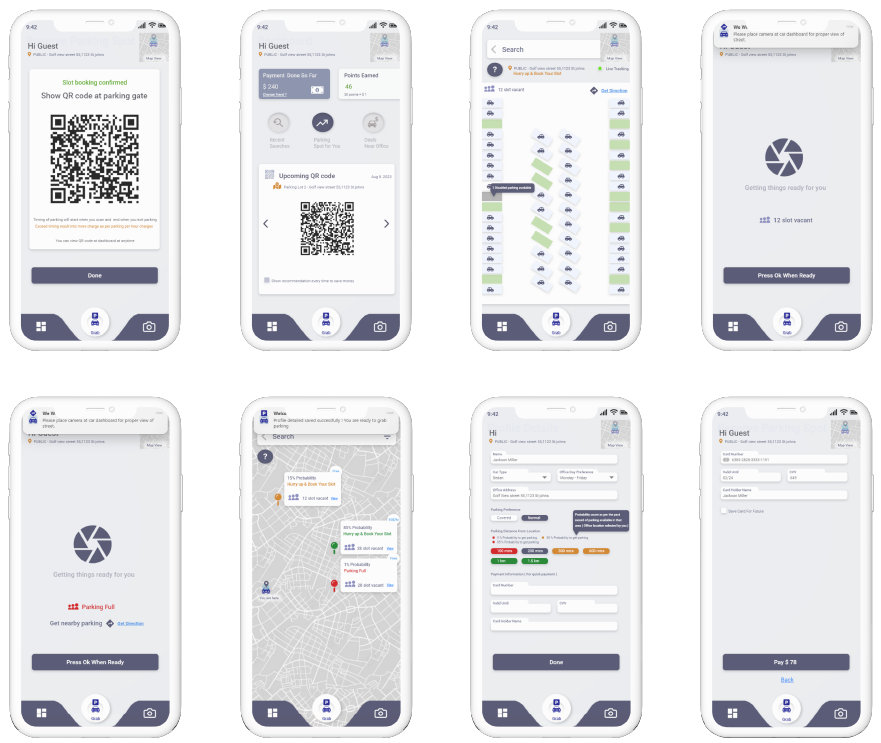
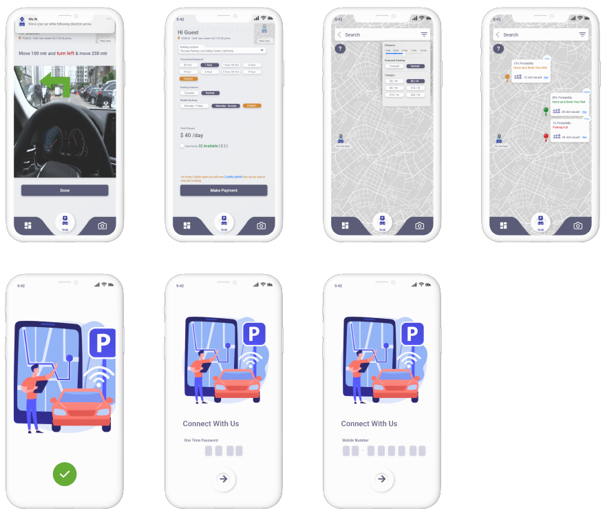

ParkingOn Go App – UX Case Study
Summary
ParkingOn Go is a B2C app designed to solve the real-world problem of finding car parking in busy office areas. This project explores a user-centered approach to improve parking experiences for professionals, minimize stress, and optimize efficiency during commutes.

Problem Statement
Office-goers face a daily struggle to find parking near workspaces. The lack of real-time availability data and poor signage often results in frustration, violations, and time loss. A smart solution was needed to ease this burden and provide a seamless experience.
Research Approach
- Customer Interviews
- Market Analysis
- Persona Development
- Customer Journey Mapping
- Information Architecture
- Prototyping
We researched the behavior of daily commuters, validated the business model, and gathered user pain points to drive the design direction.
User Persona: Alex Parker
Age: 32 Occupation: Marketing Executive Location: Suburbs, Germany
Alex commutes daily by car due to limited public transport. He often experiences stress while finding a parking spot near his office. His expectations include real-time parking availability, contactless payments, and intuitive app features.
Pain Points
- Scarcity of parking spots
- Time wasted in circling lots
- Parking fines from unclear regulations
Goals & Needs
- Real-time info on available spots
- Navigation to nearest parking
- Cashless payment methods
Empathy Map
Says: "I hope I find parking on time."
Thinks: "I wish there was a better way to know where parking is available."
Does: Drives around, checks apps.
Feels: Stressed, frustrated, relieved (on finding spot).
Prototyping & Storyboard
We storyboarded Alex’s journey from leaving home to successfully parking using the app. Highlights include:
- Frustration during parking hunt
- Discovering app and viewing live parking availability
- Using filters to select covered/EV-compatible spots
- Navigation to spot and seamless in-app payment
- Sharing positive experience at work
User Flow & Information Architecture
Designed with clear hierarchy, intuitive steps from location search to payment confirmation. Grid layout and spacing optimized for visibility and quick actions.
Wireframes
Low-fidelity wireframes explored user flow and layout simplicity before moving to medium fidelity and interactive prototypes.
 Conclusion
The ParkingOn Go App addresses real urban pain points through human-centered design, thoughtful flows, and modern tech. Alex’s story became the basis for solving similar user journeys citywide.